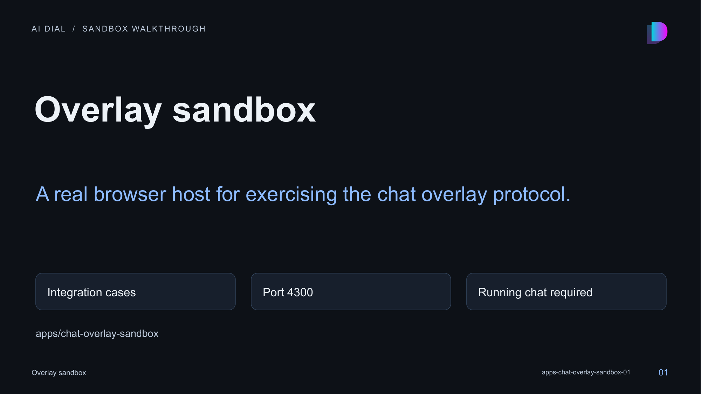

01 · Overlay sandbox

Speaker notes and sources
This is a React/Vite demonstration application, not an isolated MCP resource renderer. It hosts existing overlay clients against a running chat instance.
- apps/chat-overlay-sandbox/README.md:1-73
- apps/chat-overlay-sandbox/src/main.tsx:1-15